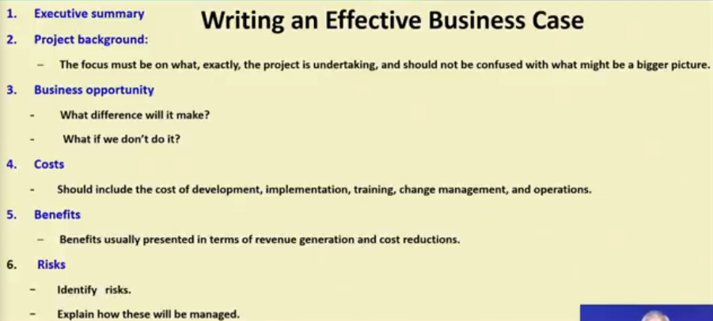
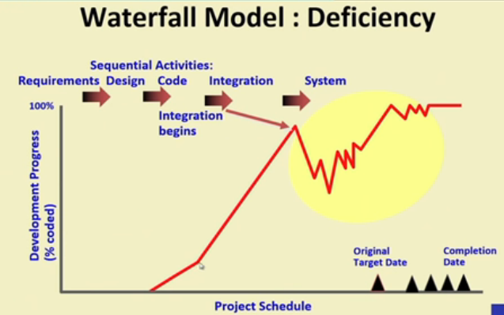

Waterfall Model
Classical Waterfall Model
It divides lifecycle into following phases:
• Feasibility study
• Requirement analysis and specification
• Design
• Coding and unit testing
• Integration and system testing
• Maintenance
Relative effort for phases
⇒ Phases between feasibility study and testing are called development phases.
⇒ Among all life cycle phases maintenance phase consumes maximum effort.
⇒ Among development phases, testing phase consumes the maximum effort.
~~~~~~~~~~~~~~~~~~~~~~~~~~~~~~~~~
Feasibility Study
Main aim of feasibility study is to determine whether developing the software is:
- Financially Worthwhile
- Technically feasible
Roughly understand what customer wants
- Data which would be input to the system
- Processing needed on these data
- Output data to be produced by the system
- Various contrains on the behaviour of the system.
Activities During Feasibility Study
-Workout an overall understanding of the problem.
-Formulate different solution strategies.
-Examine alternate solution strategies in terms of:
->Resources required
-> Cost of developmet
-> Development time
-Perform a cost/benefit analysis
->Determine which solution is best
-> May also find none of the solutions is feasible due to high cost, resource contraints, technical reasons.
In cost/benefit analysis
-Need to identify all costs which could include
-> Development costs
-> Set-up
-> Operational costs
-Identify the values of benefits
-Check benefits are greater than costs
When the feasibility study overs, it help to write Business case.
Business case must
- provide the justification for the starting of the project.
- Should show that the benefits of the project will exceed.
- Need to take account of business risks.

~~~~~~~~~~~~~~~~~~~~~~~~~~~~~~~~~
Requirement Analysis and specifications
-> Aim of this phase:
- Understand the exact requirements of the customer.
- Document them properly.
-> Consist of two distinct activities
- Requirement gathering and analysis.
- Requirements specification
In Requirement gathering we gather requirement data from the customer and in requirement analysis we analyze the collected data to understand what customers want.
On analysis we can find certain problems in the requirement namely:
- Inconsistencies (one part contradicts other part)
- Anomalies (Some part is not clear)
- Incompleteness (some part is incomplete)
After removing all these problems a Software Requirements Specification (SRS) document is formed.
~~~~~~~~~~~~~~~~~~~~~~~~~~~~~~~~~
Design
During design phase requirements specfication is transformed into a form suitable for implementation in some programming language.
Two commonly used design approaches are :
- Traditional approach
- Object oriented approach
In traditional approach, two things are done
- Structured analysis (typically carried out by Data flow design (DFD))
- Structured design
In object oriented design(OOD), we first identify various objects(real world entities) occuring in the problem then identify the relationship among the objects.
Then we create object structure by refining it to obtain detailed design.
Advantages of OOD
-Lower development effort
-Lower development time
-Better maintainability
~~~~~~~~~~~~~~~~~~~~~~~~~~~~~~~~~
Coding and Unit testing
During this phase :
- Each module of the design is coded
- Each module is unit tested i.e tested independently as a standalone unit and debugged.
- Each module is documented.
~~~~~~~~~~~~~~~~~~~~~~~~~~~~~~~~~
Integration and System Testing
During Integration:
- Different modules are integrated in a planned manner.
- The modules are usually integrated through a number of steps.
- During each integration step, the partially integrated system is tested.
During system testing:
-It's done after all the integration of module is finished.
-It's goal is to ensure that the developed system functions according to its requirements as specified in the SRS document.
~~~~~~~~~~~~~~~~~~~~~~~~~~~~~~~~~
Maintenance
- Maintenance of any software requires much more efforts that the effort to develop the product itself.
- Development effort to maintennce effort is typically 40:60.
Types of maintenance
Classical waterfall model is idealistic:
- It assumens that no defects is introduced during any development activity but in practice defects do get introduced in almost every phase of the life cycle.
- Defects usually get detected much later in the life cycle. For ex, a design defect might go unnoticed till the coding or testing phase.
- The later the phase in which the defect gets detected, the more expensive is its removal.
- Once a defect is detected:
-> The phase in which it occured needs to be reworked.
-> Redo some of the work done during that and all subsequent phases.
- So we came up with a solution that :
“There is need of feedback paths in the classical waterfall model.” and we called this updated model as Iterative waterfall model.
From above observations we concluded that “Errors should be detected in the same phase in which they are introduced” and this is called phase containment of errors.
Strengths of waterfall model
→ Easy to understand, easy to use
→ Provides a reference to inexperienced staff
→ Milestones are well understood by the team
→ Provides requirement stability
→ Facilitates strong management control (plan, staff, track)
Deficienies of waterfall model
→ All requirements must be known upfront
→ Deliverables created for each phase are considered frozen-inhibits flexibility
→ Can give a false impression of progress.
→ Integration is one big bang at the end.
→ Little opportunity for customers to preview the system.

When to use Waterfall model?
→ Requirements are well known and stable
→ Technology is understood
→ Experienced development team
~~~~~~~~~~~~~~~~~~~~~~~~~~~~~~~~~